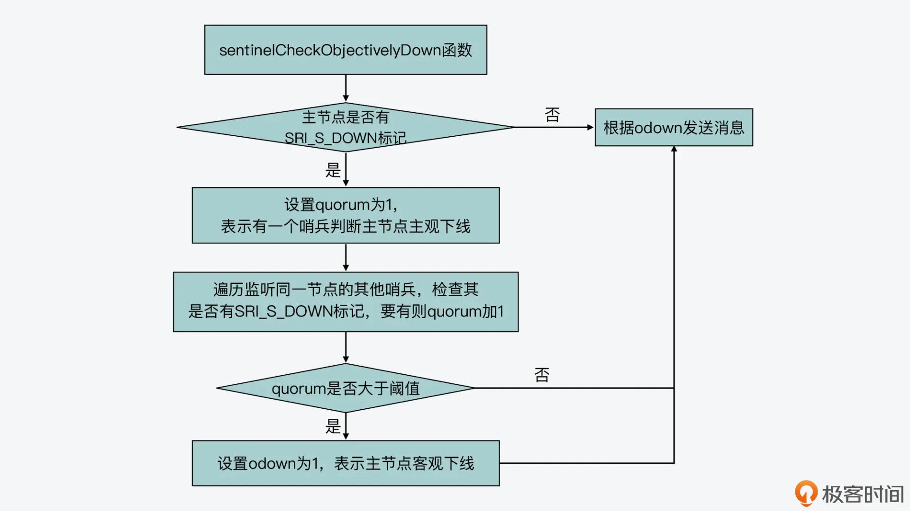
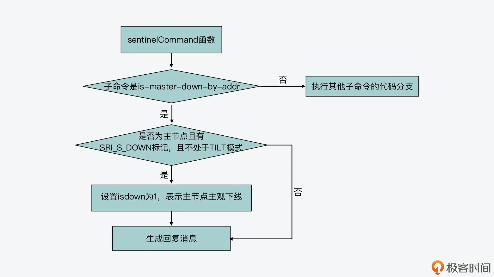
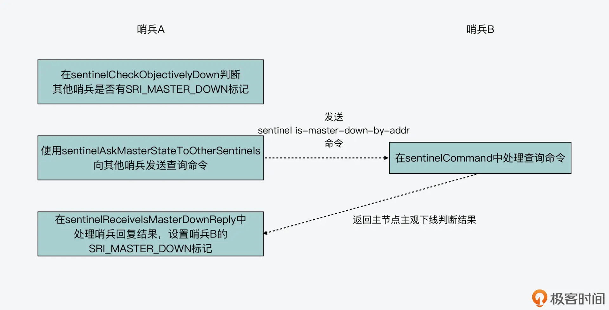
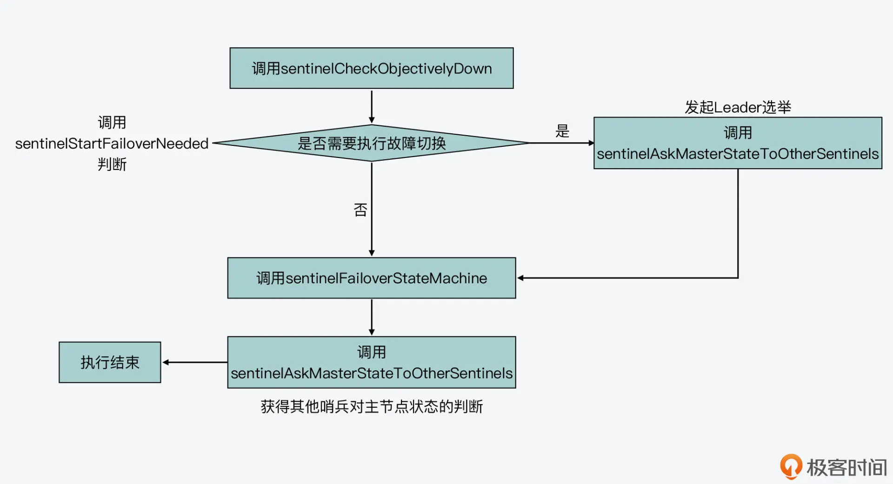
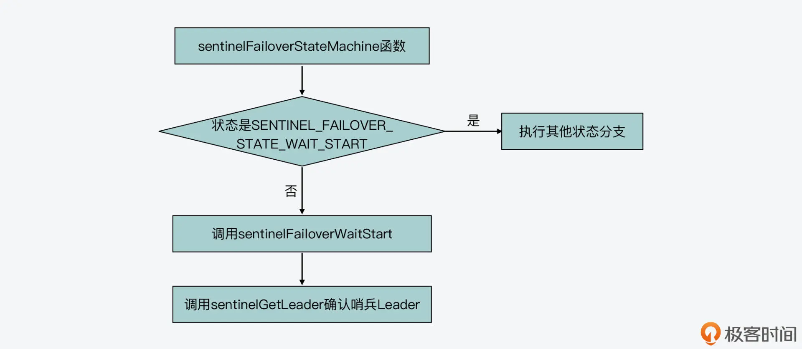
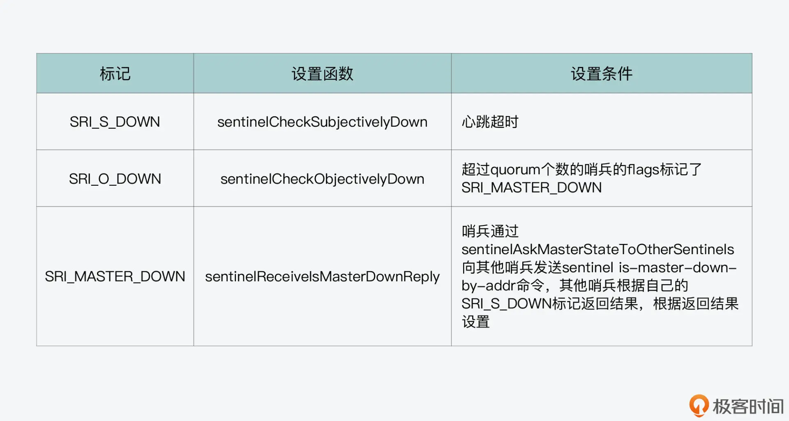

- 00 开篇词 阅读Redis源码能给你带来什么？.md.html
- 01 带你快速攻略Redis源码的整体架构.md.html
- 02 键值对中字符串的实现，用char还是结构体？.md.html
- 03 如何实现一个性能优异的Hash表？.md.html
- 04 内存友好的数据结构该如何细化设计？.md.html
- 05 有序集合为何能同时支持点查询和范围查询？.md.html
- 06 从ziplist到quicklist，再到listpack的启发.md.html
- 07 为什么Stream使用了Radix Tree？.md.html
- 08 Redis server启动后会做哪些操作？.md.html
- 09 Redis事件驱动框架（上）：何时使用select、poll、epoll？.md.html
- 10 Redis事件驱动框架（中）：Redis实现了Reactor模型吗？.md.html
- 11 Redis事件驱动框架（下）：Redis有哪些事件？.md.html
- 12 Redis真的是单线程吗？.md.html
- 13 Redis 6.0多IO线程的效率提高了吗？.md.html
- 14 从代码实现看分布式锁的原子性保证.md.html
- 15 为什么LRU算法原理和代码实现不一样？.md.html
- 16 LFU算法和其他算法相比有优势吗？.md.html
- 17 Lazy Free会影响缓存替换吗？.md.html
- 18 如何生成和解读RDB文件？.md.html
- 19 AOF重写（上）：触发时机与重写的影响.md.html
- 20 AOF重写（下）：重写时的新写操作记录在哪里？.md.html
- 21 主从复制：基于状态机的设计与实现.md.html
- 22 哨兵也和Redis实例一样初始化吗？.md.html
- 23 从哨兵Leader选举学习Raft协议实现（上）.md.html
- 24 从哨兵Leader选举学习Raft协议实现（下）.md.html
- 25 PubSub在主从故障切换时是如何发挥作用的？.md.html
- 26 从Ping-Pong消息学习Gossip协议的实现.md.html
- 27 从MOVED、ASK看集群节点如何处理命令？.md.html
- 28 Redis Cluster数据迁移会阻塞吗？.md.html
- 29 如何正确实现循环缓冲区？.md.html
- 30 如何在系统中实现延迟监控？.md.html
- 31 从Module的实现学习动态扩展功能.md.html
- 32 如何在一个系统中实现单元测试？.md.html
- 结束语 Redis源码阅读，让我们从新开始.md.html
- 捐赠
24 从哨兵Leader选举学习Raft协议实现（下）
上节课，我给你介绍了 Raft 协议的基本流程，以及哨兵实例工作的基本过程。哨兵是通过 serverCron 函数的周期性执行，进而在 serverCron 中调用 sentinelTimer 函数，实现周期性处理哨兵相关的时间事件。而 sentinelTimer 函数处理的时间事件，就包括了对哨兵监听的每个主节点，它会通过调用 sentinelHandleRedisInstance 函数，来检查主节点的在线状态，并在主节点客观下线时进行故障切换。
另外，我还带你了解了 sentinelHandleRedisInstance 函数执行过程的前三步操作，分别是重连断连的实例、周期性给实例发送检测命令，检测实例是否主观下线，这也分别对应了 sentinelReconnectInstance、sentinelSendPeriodicCommands 和 sentinelCheckSubjectivelyDown 这三个函数，你可以再回顾下。
那么，今天这节课，我接着来给你介绍 sentinelHandleRedisInstance 函数执行过程中的剩余操作，分别是检测主节点是否客观下线、判断是否需要执行故障切换，以及需要故障切换时的哨兵 Leader 选举的具体过程。
学完这节课的内容，你就可以对哨兵工作的过程有个全面了解了。并且，你可以掌握如何在代码层面实现 Raft 协议来完成 Leader 选举。这样，当你日后在分布式系统中实现分布式共识时，这部分内容就能帮助指导你的代码设计与实现了。
接下来，我们先来看下主节点的客观下线判断。
主节点客观下线判断
现在我们知道，哨兵在 sentinelHandleRedisInstance 函数中会调用 sentinelCheckObjectivelyDown 函数（在 sentinel.c 文件中），来检测主节点是否客观下线。
而 sentinelCheckObjectivelyDown 函数在执行时，除了会检查当前哨兵对主节点主观下线的判断结果，还需要结合监听相同主节点的其他哨兵，对主节点主观下线的判断结果。它把这些判断结果综合起来，才能做出主节点客观下线的最终判断。
从代码实现层面来看，在哨兵用来记录主节点信息的 sentinelRedisInstance 结构体中，本身已经用哈希表保存了监听同一主节点的其他哨兵实例，如下所示：
typedef struct sentinelRedisInstance {
…
dict *sentinels;
…
}
这样一来，sentinelCheckObjectivelyDown 函数通过遍历主节点记录的 sentinels 哈希表，就可以获取其他哨兵实例对同一主节点主观下线的判断结果。这也是因为，sentinels 哈希表中保存的哨兵实例，它们同样使用了 sentinelRedisInstance 这个结构体，而这个结构体的成员变量 flags，会记录哨兵对主节点主观下线的判断结果。
具体来说，sentinelCheckObjectivelyDown 函数会使用 quorum 变量，来记录判断主节点为主观下线的哨兵数量。如果当前哨兵已经判断主节点为主观下线，那么它会先把 quorum 值置为 1。然后，它会依次判断其他哨兵的 flags 变量，检查是否设置了 SRI_MASTER_DOWN 的标记。如果设置了，它就会把 quorum 值加 1。
当遍历完 sentinels 哈希表后，sentinelCheckObjectivelyDown 函数会判断 quorum 值是否大于等于预设定的 quorum 阈值，这个阈值保存在了主节点的数据结构中，也就是 master->quorum，而这个阈值是在 sentinel.conf 配置文件中设置的。
如果实际的 quorum 值大于等于预设的 quorum 阈值，sentinelCheckObjectivelyDown 函数就判断主节点为客观下线，并设置变量 odown 为 1，而这个变量就是用来表示当前哨兵对主节点客观下线的判断结果的。
这部分的判断逻辑如下代码所示，你可以看下：
void sentinelCheckObjectivelyDown(sentinelRedisInstance *master) {
…
//当前主节点已经被当前哨兵判断为主观下线
if (master->flags & SRI_S_DOWN) {
quorum = 1; //当前哨兵将quorum值置为1
di = dictGetIterator(master->sentinels);
while((de = dictNext(di)) != NULL) { //遍历监听同一主节点的其他哨兵
sentinelRedisInstance *ri = dictGetVal(de);
if (ri->flags & SRI_MASTER_DOWN) quorum++;
}
dictReleaseIterator(di);
//如果quorum值大于预设的quorum阈值，那么设置odown为1。
if (quorum >= master->quorum) odown = 1;
}
另外，这里我也画了一张图，展示了该判断逻辑，你可以再来回顾下。

那么，一旦 sentinelCheckObjectivelyDown 函数判断主节点客观下线了，它就会调用 sentinelEvent 函数发送 +odown 事件消息，然后在主节点的 flags 变量中设置 SRI_O_DOWN 标记，如下所示：
//判断主节点为客观下线
if (odown) {
//如果没有设置SRI_O_DOWN标记
if ((master->flags & SRI_O_DOWN) == 0) {
sentinelEvent(LL_WARNING,"+odown",master,"%@ #quorum %d/%d",
quorum, master->quorum); //发送+odown事件消息
master->flags |= SRI_O_DOWN; //在主节点的flags中记录SRI_O_DOWN标记
master->o_down_since_time = mstime(); //记录判断客观下线的时间
}
}
也就是说，sentinelCheckObjectivelyDown 函数是通过遍历监听同一主节点的其他哨兵的 flags 变量，来判断主节点是否客观下线的。
不过，你看完刚才的代码可能会有一个疑问，在上节课学习的 sentinelCheckSubjectivelyDown 函数中，如果哨兵判断主节点为主观下线，是会在主节点的 flags 变量中设置 SRI_S_DOWN 标记，如下所示：
//哨兵已判断主节点为主观下线
…
//对应主节点的sentinelRedisInstance结构中flags没有记录主观下线
if ((ri->flags & SRI_S_DOWN) == 0) {
…
ri->flags |= SRI_S_DOWN; //在主节点的flags中记录主观下线的标记，
}
但是，sentinelCheckObjectivelyDown 函数，是检查监听同一主节点的其他哨兵 flags 变量中的 SRI_MASTER_DOWN 标记，那么其他哨兵的 SRI_MASTER_DOWN 标记是如何设置的呢?
这就和 sentinelAskMasterStateToOtherSentinels 函数（在 sentinel.c 文件中）有关系了，下面，我们来具体了解下这个函数。
sentinelAskMasterStateToOtherSentinels 函数
sentinelAskMasterStateToOtherSentinels 函数的主要目的，是向监听同一主节点的其他哨兵发送 is-master-down-by-addr 命令，进而询问其他哨兵对主节点的状态判断。
它会调用 redisAsyncCommand 函数（在async.c文件中），依次向其他哨兵发送 sentinel is-master-down-by-addr 命令，同时，它设置了收到该命令返回结果的处理函数为 sentinelReceiveIsMasterDownReply（在 sentinel.c 文件中），如下所示：
void sentinelAskMasterStateToOtherSentinels(sentinelRedisInstance *master, int flags) {
…
di = dictGetIterator(master->sentinels);
//遍历监听同一主节点的其他哨兵
while((de = dictNext(di)) != NULL) {
sentinelRedisInstance *ri = dictGetVal(de);
…
//发送sentinel is-master-down-by-addr命令
retval = redisAsyncCommand(ri->link->cc,
sentinelReceiveIsMasterDownReply, ri,
"%s is-master-down-by-addr %s %s %llu %s",
sentinelInstanceMapCommand(ri,"SENTINEL"),
master->addr->ip, port,
sentinel.current_epoch,
(master->failover_state > SENTINEL_FAILOVER_STATE_NONE) ?
sentinel.myid : "*");
}
…
}
另外从代码中，我们可以看到，sentinel is-master-down-by-addr 命令中还包括主节点 IP、主节点端口号、当前纪元（sentinel.current_epoch）和实例 ID。下面展示的就是这个命令的格式：
sentinel is-master-down-by-addr 主节点IP 主节点端口 当前epoch 实例ID
在这其中，哨兵会根据当前主节点所处的状态来设置实例 ID。如果主节点已经要开始进行故障切换了，那么，实例 ID 会被设置为当前哨兵自身的 ID，否则就会被设置为 * 号。
这里你需要注意的是，主节点的数据结构是使用了 master->failover_state 来记录故障切换的状态，其初始值为 SENTINEL_FAILOVER_STATE_NONE（对应的数值为 0），当主节点开始故障切换时，这个状态值就会大于 SENTINEL_FAILOVER_STATE_NONE 了。
好了，在了解了 sentinelAskMasterStateToOtherSentinels 函数的基本执行过程之后，我们还需要知道：sentinelAskMasterStateToOtherSentinels 函数向其他哨兵发出了 sentinel is-master-down-by-addr 命令后，其他哨兵是如何处理的呢？
sentinel is-master-down-by-addr 命令的处理
其实，哨兵对于 sentinel 开头的命令，都是在 sentinelCommand 函数（在 sentinel.c 文件）中进行处理的。sentinelCommand 函数会根据 sentinel 命令后面跟的不同子命令，来执行不同的分支，而 is-master-down-by-addr 就是一条子命令。
在 is-master-down-by-addr 子命令对应的代码分支中，sentinelCommand 函数会根据命令中的主节点 IP 和端口号，来获取主节点对应的 sentinelRedisInstance 结构体。
紧接着，它会判断主节点的 flags 变量中是否有 SRI_S_DOWN 和 SRI_MASTER 标记，也就是说，sentinelCommand 函数会检查当前节点是否的确是主节点，以及哨兵是否已经将该节点标记为主观下线了。如果条件符合，那么它会设置 isdown 变量为 1，而这个变量表示的就是哨兵对主节点主观下线的判断结果。
然后，sentinelCommand 函数会把当前哨兵对主节点主观下线的判断结果，返回给发送 sentinel 命令的哨兵。它返回的结果主要包含三部分内容，分别是当前哨兵对主节点主观下线的判断结果、哨兵 Leader 的 ID，以及哨兵 Leader 所属的纪元。
sentinelCommand 函数，对 sentinel 命令处理的基本过程如下所示：
void sentinelCommand(client *c) {
…
// is-master-down-by-addr子命令对应的分支
else if (!strcasecmp(c->argv[1]->ptr,"is-master-down-by-addr")) {
…
//当前哨兵判断主节点为主观下线
if (!sentinel.tilt && ri && (ri->flags & SRI_S_DOWN) && (ri->flags & SRI_MASTER))
isdown = 1;
…
addReplyMultiBulkLen(c,3); //哨兵返回的sentinel命令处理结果中包含三部分内容
addReply(c, isdown ? shared.cone : shared.czero); //如果哨兵判断主节点为主观下线，第一部分为1，否则为0
addReplyBulkCString(c, leader ? leader : "*"); //第二部分是Leader ID或者是*
addReplyLongLong(c, (long long)leader_epoch); //第三部分是Leader的纪元
…}
…}
你也可以参考下图：

好了，到这里你就已经知道，哨兵会通过 sentinelAskMasterStateToOtherSentinels 函数，向监听同一节点的其他哨兵发送 sentinel is-master-down-by-addr 命令，来获取其他哨兵对主节点主观下线的判断结果。而其他哨兵是使用 sentinelCommand 函数，来处理 sentinel is-master-down-by-addr 命令，并在命令处理的返回结果中，包含自己对主节点主观下线的判断结果。
不过从刚才的代码中，你也可以看到，在其他哨兵返回的 sentinel 命令处理结果中，会包含哨兵 Leader 的信息。其实，这是因为 sentinelAskMasterStateToOtherSentinels 函数发送的 sentinel is-master-down-by-addr 命令本身，也可以用来触发哨兵 Leader 选举。这个我稍后会给你介绍。
那么，我们再回到前面讲主节点客观下线判断时提出的问题，sentinelCheckObjectivelyDown 函数要检查监听同一主节点的其他哨兵 flags 变量中的 SRI_MASTER_DOWN 标记，但是，其他哨兵的 SRI_MASTER_DOWN 标记是如何设置的呢？
这实际上是和哨兵在 sentinelAskMasterStateToOtherSentinels 函数中，向其他哨兵发送 sentinel is-master-down-by-addr 命令时，设置的命令结果处理函数 sentinelReceiveIsMasterDownReply 有关。
sentinelReceiveIsMasterDownReply 函数
在 sentinelReceiveIsMasterDownReply 函数中，它会判断其他哨兵返回的回复结果。回复结果会包含我刚才介绍的三部分内容，分别是当前哨兵对主节点主观下线的判断结果、哨兵 Leader 的 ID，以及哨兵 Leader 所属的纪元。这个函数会进一步检查，其中第一部分内容“当前哨兵对主节点主观下线的判断结果”是否为 1。
如果是的话，这就表明对应的哨兵已经判断主节点为主观下线了，那么当前哨兵就会把自己记录的对应哨兵的 flags，设置为 SRI_MASTER_DOWN。
下面的代码就展示了 sentinelReceiveIsMasterDownReply 函数判断其他哨兵回复结果的执行逻辑，你可以看下。
//r是当前哨兵收到的其他哨兵的命令处理结果
//如果返回结果包含三部分内容，并且第一，二，三部分内容的类型分别是整数、字符串和整数
if (r->type == REDIS_REPLY_ARRAY && r->elements == 3 &&
r->element[0]->type == REDIS_REPLY_INTEGER &&
r->element[1]->type == REDIS_REPLY_STRING &&
r->element[2]->type == REDIS_REPLY_INTEGER)
{
ri->last_master_down_reply_time = mstime();
//如果返回结果第一部分的值为1，则在对应哨兵的flags中设置SRI_MASTER_DOWN标记
if (r->element[0]->integer == 1) {
ri->flags |= SRI_MASTER_DOWN;
}
所以到这里，你就可以知道，一个哨兵调用 sentinelCheckObjectivelyDown 函数，是直接检查其他哨兵的 flags 是否有 SRI_MASTER_DOWN 标记，而哨兵又是通过 sentinelAskMasterStateToOtherSentinels 函数，向其他哨兵发送 sentinel is-master-down-by-addr 命令，从而询问其他哨兵对主节点主观下线的判断结果的，并且会根据命令回复结果，在结果处理函数 sentinelReceiveIsMasterDownReply 中，设置其他哨兵的 flags 为 SRI_MASTER_DOWN。下图也展示了这个执行逻辑，你可以再来整体回顾下。

那么，掌握了这个执行逻辑后，我们再来看下，哨兵选举是什么时候开始执行的。
哨兵选举
这里，为了了解哨兵选举的触发，我们先来复习下在上节课，我讲过的 sentinelHandleRedisInstance 函数中针对主节点的调用关系，如下图所示：

从图中可以看到，sentinelHandleRedisInstance 会先调用 sentinelCheckObjectivelyDown 函数，再调用 sentinelStartFailoverIfNeeded 函数，判断是否要开始故障切换，如果 sentinelStartFailoverIfNeeded 函数的返回值为非 0 值，那么 sentinelAskMasterStateToOtherSentinels 函数会被调用。否则的话，sentinelHandleRedisInstance 就直接调用 sentinelFailoverStateMachine 函数，并再次调用 sentinelAskMasterStateToOtherSentinels 函数。
那么，在这个调用关系中，sentinelStartFailoverIfNeeded 会判断是否要进行故障切换，它的判断条件有三个，分别是：
- 主节点的 flags 已经标记了 SRI_O_DOWN；
- 当前没有在执行故障切换；
- 如果已经开始故障切换，那么开始时间距离当前时间，需要超过 sentinel.conf 文件中的 sentinel failover-timeout 配置项的 2 倍。
这三个条件都满足后，sentinelStartFailoverIfNeeded 就会调用 sentinelStartFailover 函数，开始启动故障切换，而 sentinelStartFailover 会将主节点的 failover_state 设置为 SENTINEL_FAILOVER_STATE_WAIT_START，同时在主节点的 flags 设置 SRI_FAILOVER_IN_PROGRESS 标记，表示已经开始故障切换，如下所示：
void sentinelStartFailover(sentinelRedisInstance *master) {
…
master->failover_state = SENTINEL_FAILOVER_STATE_WAIT_START;
master->flags |= SRI_FAILOVER_IN_PROGRESS;
…
}
而一旦 sentinelStartFailover 函数将主节点的 failover_state 设置为 SENTINEL_FAILOVER_STATE_WAIT_START 后，接下来，sentinelFailoverStateMachine 函数就会执行状态机来完成实际的切换。不过，在实际切换前，sentinelAskMasterStateToOtherSentinels 函数会被调用。
看到这个调用关系，你可能会有个疑问：sentinelAskMasterStateToOtherSentinels 函数是用来向其他哨兵询问对主节点主观下线的判断结果的，如果 sentinelStartFailoverIfNeeded 判断要开始执行故障切换，那么为什么还要调用 sentinelAskMasterStateToOtherSentinels 函数呢？
其实，这就和 sentinelAskMasterStateToOtherSentinels 函数的另一个作用有关了，这个函数除了会用来向其他哨兵询问对主节点状态的判断，它还可以用来向其他哨兵发起 Leader 选举。
在刚才给你介绍这个函数时，我提到它会给其他哨兵发送 sentinel is-master-down-by-addr 命令，这个命令包括主节点 IP、主节点端口号、当前纪元（sentinel.current_epoch）和实例 ID。其中，如果主节点的 failover_state 已经不再是 SENTINEL_FAILOVER_STATE_NONE，那么实例 ID 会被设置为当前哨兵的 ID。
而在 sentinel 命令处理函数中，如果检测到 sentinel 命令中的实例 ID 不为 * 号，那么就会调用 sentinelVoteLeader 函数来进行 Leader 选举。
//当前实例为主节点，并且sentinel命令的实例ID不等于*号
//当前实例为主节点，并且sentinel命令的实例ID不等于*号
if (ri && ri->flags & SRI_MASTER && strcasecmp(c->argv[5]->ptr,"*")) {
//调用sentinelVoteLeader进行哨兵Leader选举
leader = sentinelVoteLeader(ri,(uint64_t)req_epoch, c->argv[5]->ptr,
&leader_epoch);
}
下面，我们来具体了解下这个 sentinelVoteLeader 函数。
sentinelVoteLeader 函数
sentinelVoteLeader 函数会实际执行投票逻辑，这里我通过一个例子来给你说明。
假设哨兵 A 判断主节点 master 客观下线了，它现在向哨兵 B 发起投票请求，哨兵 A 的 ID 是 req_runid。那么哨兵 B 在执行 sentinelVoteLeader 函数时，这个函数会判断哨兵 A 的纪元（req_epoch）、哨兵 B 的纪元（sentinel.current_epoch），以及 master 记录的 Leader 的纪元（master->leader_epoch）。按照 Raft 协议的定义，哨兵 A 就是 Candidate 节点，而哨兵 B 就是 Follower 节点。
我在上节课给你介绍 Raft 协议时有提到过，Candidate 发起投票都是有轮次记录的，Follower 在一轮投票中只能投一票。这里的纪元正是起到了轮次记录的作用。而 sentinelVoteLeader 函数判断纪元也是按照 Raft 协议的要求，让 Follower 在一轮中只能投一票。
那么，sentinelVoteLeader 函数让哨兵 B 投票的条件是：master 记录的 Leader 的纪元小于哨兵 A 的纪元，同时，哨兵 A 的纪元要大于或等于哨兵 B 的纪元。这两个条件保证了哨兵 B 还没有投过票，否则的话，sentinelVoteLeader 函数就直接返回当前 master 中记录的 Leader ID 了，这也是哨兵 B 之前投过票后记录下来的。
下面的代码展示了刚才介绍的这部分逻辑，你可以看下。
if (req_epoch > sentinel.current_epoch) {
sentinel.current_epoch = req_epoch;
…
sentinelEvent(LL_WARNING,"+new-epoch",master,"%llu",
(unsigned long long) sentinel.current_epoch);
}
if (master->leader_epoch < req_epoch && sentinel.current_epoch <= req_epoch)
{
sdsfree(master->leader);
master->leader = sdsnew(req_runid);
master->leader_epoch = sentinel.current_epoch;
…
}
return master->leader ? sdsnew(master->leader) : NULL;
那么现在，你就了解了 sentinelVoteLeader 函数是如何使用纪元判断来按照 Raft 协议完成哨兵 Leader 选举的了。
接下来，发起投票的哨兵仍然是通过 sentinelReceiveIsMasterDownReply 函数来处理其他哨兵对 Leader 投票的返回结果。这个返回结果，就像刚才给你介绍的，它的第二、三部分内容是哨兵 Leader 的 ID，和哨兵 Leader 所属的纪元。发起投票的哨兵就可以从这个结果中获得其他哨兵对 Leader 的投票结果了。
最后，发起投票的哨兵在调用了 sentinelAskMasterStateToOtherSentinels 函数让其他哨兵投票后，会执行 sentinelFailoverStateMachine 函数。
如果主节点开始执行故障切换了，那么，主节点的 failover_state，会被设置成 SENTINEL_FAILOVER_STATE_WAIT_START。在这种状态下，sentinelFailoverStateMachine 函数会调用 sentinelFailoverWaitStart 函数。而 sentinelFailoverWaitStart 函数，又会调用 sentinelGetLeader 函数，来判断发起投票的哨兵是否为哨兵 Leader。发起投票的哨兵要想成为 Leader，必须满足两个条件：
- 一是，获得超过半数的其他哨兵的赞成票
- 二是，获得超过预设的 quorum 阈值的赞成票数。
这两个条件，也可以从 sentinelGetLeader 函数中的代码片段看到，如下所示。
//voters是所有哨兵的个数，max_votes是获得的票数
voters_quorum = voters/2+1; //赞成票的数量必须是超过半数以上的哨兵个数
//如果赞成票数不到半数的哨兵个数或者少于quorum阈值，那么Leader就为NULL
if (winner && (max_votes < voters_quorum || max_votes < master->quorum))
winner = NULL;
//确定最终的Leader
winner = winner ? sdsnew(winner) : NULL;
下图就展示了刚才介绍的确认哨兵 Leader 时的调用关系，你可以看下。

好了，到这里，最终的哨兵 Leader 就能被确定了。
小结
好了，今天这节课的内容就到这里，我们来小结下。
今天这节课，我在上节课的基础上，重点给你介绍了哨兵工作过程中的客观下线判断，以及 Leader 选举。因为这个过程涉及哨兵之间的交互询问，所以并不容易掌握，你需要好好关注以下我提到的重点内容。
首先，客观下线的判断涉及三个标记的判断，分别是主节点 flags 中的 SRI_S_DOWN 和 SRI_O_DOWN，以及哨兵实例 flags 中的 SRI_MASTER_DOWN，我画了下面这张表，展示了这三个标记的设置函数和条件，你可以再整体回顾下。

而一旦哨兵判断主节点客观下线了，那么哨兵就会调用 sentinelAskMasterStateToOtherSentinels 函数进行哨兵 Leader 选举。这里，你需要注意的是，向其他哨兵询问主节点主观下线状态，以及向其他哨兵发起 Leader 投票，都是通过 sentinel is-master-down-by-addr 命令实现的，而 Redis 源码是用了同一个函数 sentinelAskMasterStateToOtherSentinels 来发送该命令，所以你在阅读源码时，要注意区分 sentinelAskMasterStateToOtherSentinels 发送的命令是查询主节点主观下线状态还是进行投票。
最后，哨兵 Leader 选举的投票是在 sentinelVoteLeader 函数中完成的，为了符合 Raft 协议的规定，sentinelVoteLeader 函数在执行时主要是要比较哨兵的纪元，以及 master 记录的 Leader 纪元，这样才能满足 Raft 协议对 Follower 在一轮投票中只能投一票的要求。
好了，到今天这节课，我们就了解了哨兵 Leader 选举的过程，你可以看到，虽然哨兵选举的最后执行逻辑就是在一个函数中，但是哨兵选举的触发逻辑是包含在了哨兵的整个工作过程中的，所以我们也需要掌握这个过程中的其他操作，比如主观下线判断、客观下线判断等。
每课一问
哨兵在 sentinelTimer 函数中调用 sentinelHandleDictOfRedisInstances 函数，对每个主节点都执行 sentinelHandleRedisInstance 函数，并且还会对主节点的所有从节点也执行 sentinelHandleRedisInstance 函数，那么，哨兵会判断从节点的主观下线和客观下线吗？
© 2019 - 2023 Liangliang Lee. Powered by gin and hexo-theme-book.